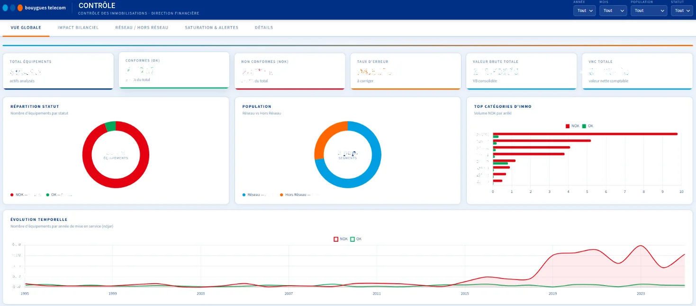
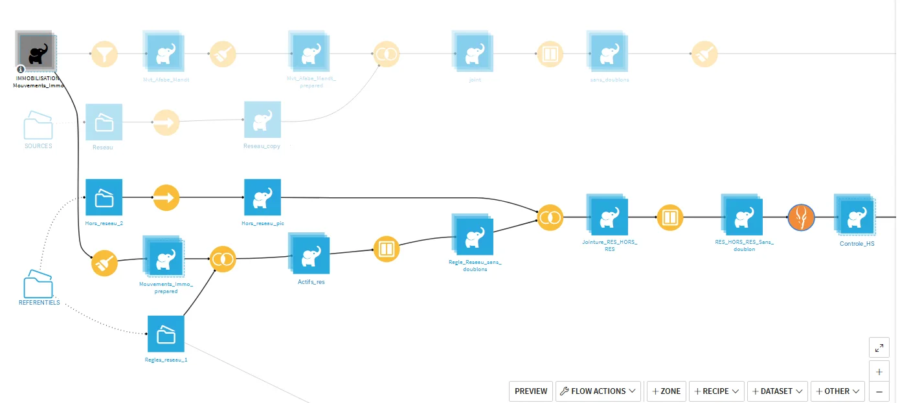
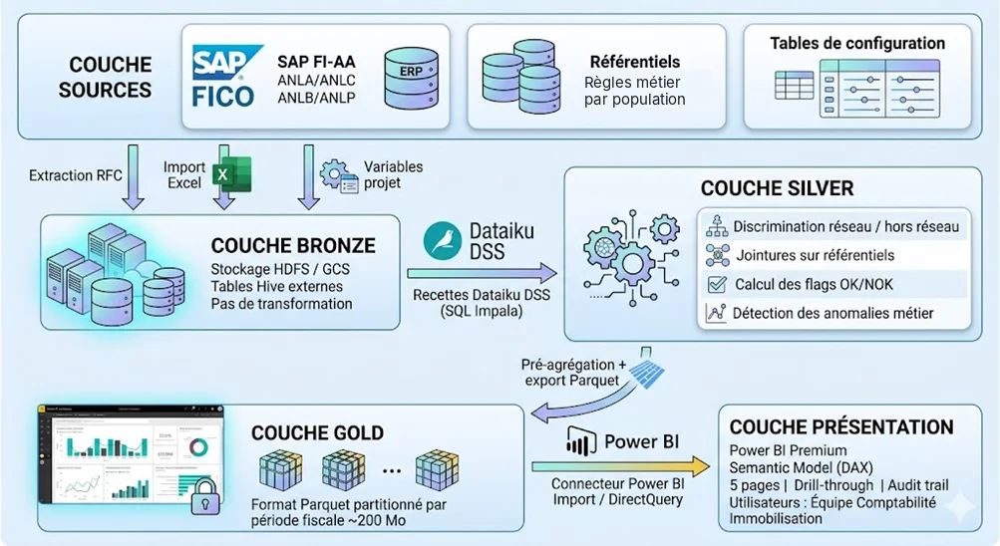
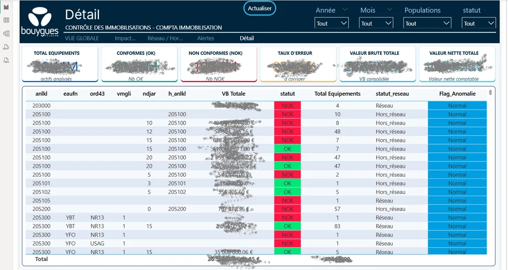

// Projet
Lakehouse pour le contrôle interne des actifs immobilisés
Bouygues Telecom, direction Finance, projet mené de bout en bout
lignes traitées
du parc, contre un échantillon
délai de préparation d'une clôture (estimé)
Contexte
La comptabilité des immobilisations doit vérifier que la durée d'amortissement de chaque actif respecte la règle théorique applicable (IAS 16), avec un contrôle documenté et une piste d'audit.
Le contrôle se faisait sous Excel, par échantillonnage, en 2 à 3 semaines de travail à chaque clôture. Excel ne pouvait pas traiter un volume de plus de 100 millions de lignes, et deux populations d'actifs (réseau et hors réseau) suivent des référentiels de règles différents.
Démarche
- Recueil des besoins et spécifications fonctionnelles avec l'équipe Comptabilité des immobilisations. Principe retenu dès le départ : l'outil signale les anomalies, l'expert les valide.
- Cinq itérations de prototype recettées avec l'équipe : wireframes papier, maquettes Power BI avec drill-through, prototype sur un échantillon, puis version complète sur l'ensemble du volume (plus de 100 M de lignes).
- Pipelines ETL/ELT en SQL dans Dataiku DSS, aujourd'hui exécutés sur BigQuery, organisés en couches Bronze / Silver / Gold.
- Documentation des règles de gestion et du dictionnaire de données, tests de qualification et recette.
Architecture en couches
Chaque actif est classé dans sa population (réseau ≈ 85 %, hors réseau ≈ 15 %), puis sa durée réelle est comparée à la règle de son référentiel. Le résultat est un flag OK ou NOK sur chaque ligne, jamais une correction automatique : la machine détecte, l'expert valide.
En images








Cliquez sur une image pour l'agrandir.
Résultats
- 100 % du parc contrôlé à chaque clôture, contre un échantillon auparavant.
- Délai de préparation d'une clôture réduit d'environ 90 % (estimation du bilan projet).
- Réponses aux commissaires aux comptes facilitées : chaque anomalie remonte jusqu'à sa ligne SAP source.
- Pipeline en production sur BigQuery ; prochaine étape : activer l'ordonnancement quotidien.
Ce que j'en retiens
- La contrainte la plus forte était humaine et réglementaire, pas technique.
- Comprendre le travail réel de l'équipe avant de coder a évité de construire le mauvais outil.
- Automatiser la détection, jamais la décision : c'est ce qui a permis l'adoption par l'équipe.
Rapport et code
Pas de rapport public pour ce projet. Je le présente volontiers à l'oral.
Tous mes dépôts : github.com/payebie
Sur les captures, les montants et volumes sont floutés et les noms internes masqués.